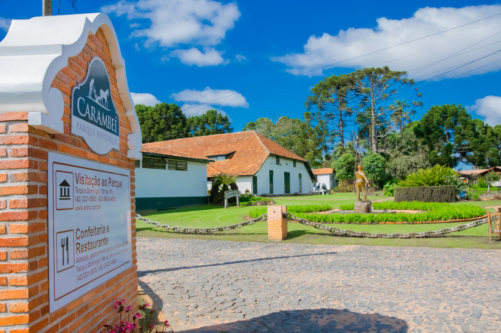
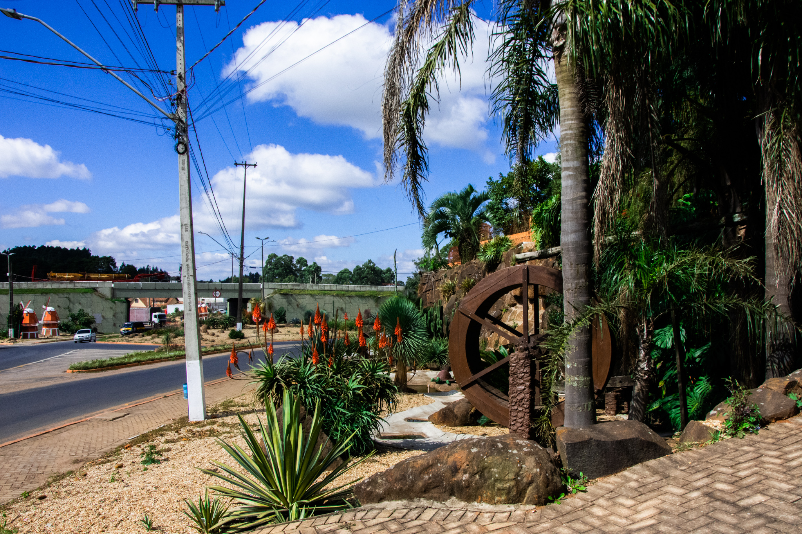
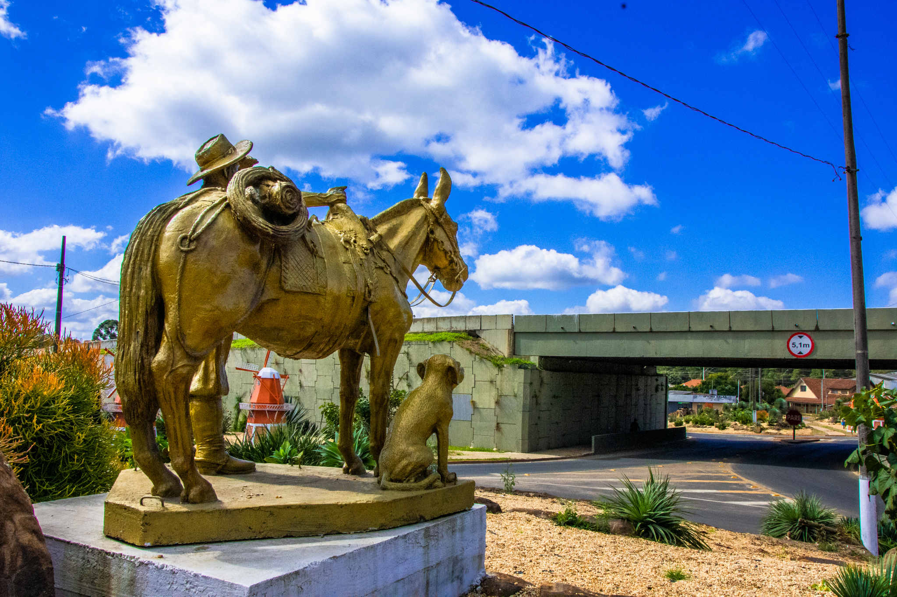
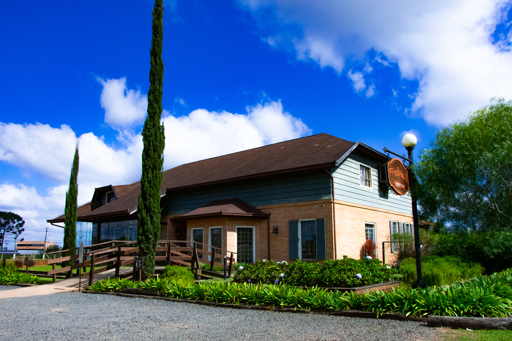

A antiga estação ferroviária de Carambeí, um marco histórico da cidade.

Detalhe da arquitetura holandesa, característica da colonização local.

Um vibrante campo de girassóis, típico das paisagens rurais de Carambeí.

Vista panorâmica da cidade ao entardecer, com suas luzes começando a brilhar.